Mistolar.net
The unique and developing history
of the Nivaclé communities
descending from Mistolar
The unique and developing history
of the Nivaclé communities
descending from Mistolar
Your Subtitle text
Agosto, 2011

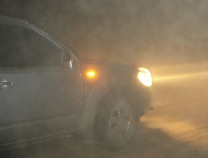
En un momento tuvimos que parar para esperar que baje el polvo ya que no veíamos nada.

Hermanos esperando a saludarnos. Como no los visita casi nadie, cuando va alguien lo reciben con mucha expectativa.

Grupo de hermanos que nos esperaban.

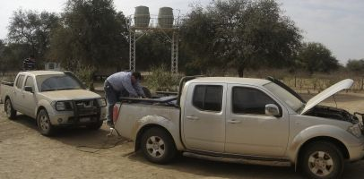
Los dos equipos que fueron. Utilizamos dos camionetas por seguridad.

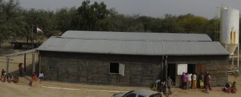
Vista panorámica de la capilla y sus alrededores. Foto tomada desde arriba del tanque de agua.

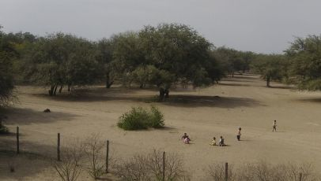
Vista panorámica de los alrededores. Foto tomada desde arriba del tanque de agua.

A la derecha, donde está el cartel, es el salón sacramental. A la izquierda son las aulas. En la semana se usa como escuela.

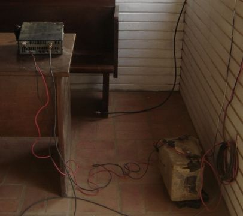
Equipo UHF. Cada día a la 9.30 am se comunican con Abundancia para estar comunicados y avisar si hay algún problema. Es el único medio de comunicación. A veces, en el medio de la cancha de vóley, hay un punto que se puede obtener señal de celular de Argentina.

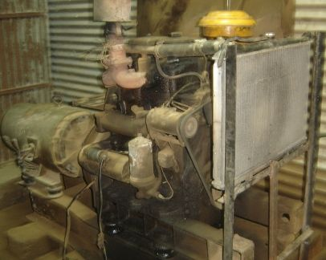
Grupo Electrógeno que da electricidad para la capilla. Solo se usa los domingo para la capilla. Es un motor a Diesel.

Frente de la capilla de Mistolar.

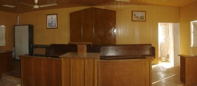
Salon sacramental de la capilla de Mistolar.

Una de las aulas de la capilla.

Presidente Ortiz y Hno. Texeira. Es en el obispado de la capilla, al lado del salon sacramental.

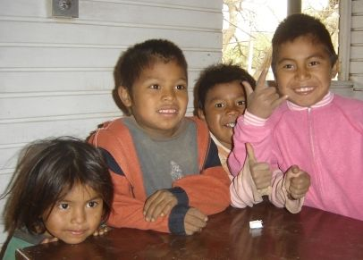
Niños de Mistolar. El que esta con ropa rosa es el hijo del Presidente Ortiz.

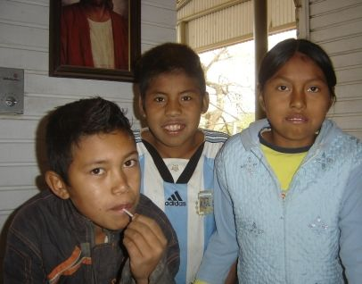
Otros niños de la iglesia. El que tiene la remera, de Argentina es, porque muchos hombres van a trabajar a "El Potrillo, Formosa, Argentina". Entonces tienen más contacto con Argentina que con Paraguay.

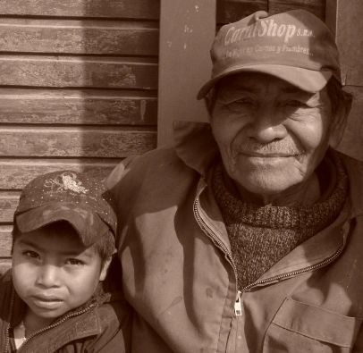
Hermano Pancho Yegros con su nieto. El Hno. Pancho es uno de los más viejos de Mistolar.

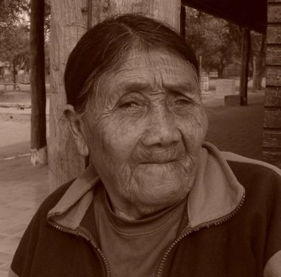
Hermana Juliana Fermín. No quería sacarse ninguna foto.

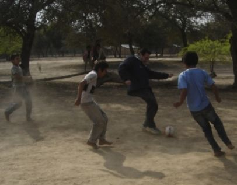
Jugando al futbol un rato. El hermano del medio es Hno. Justo Ríos, administrador de las propiedades de la iglesia.

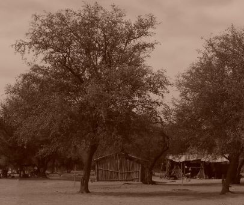
Foto de algunas casas de los Nivaclé.

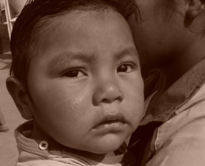
Niño de Mistolar.

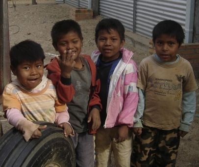
Estos niños nos seguían a todos lados.
Cada uno dice su nombre.

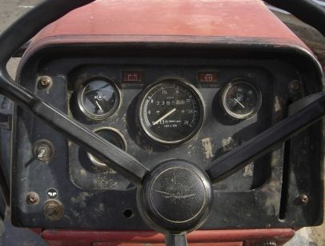
Tractor que usan para movilizarse. Cada seis meses van a la conferencia de distrito como 40 hermanos atrás del tractor en un tráiler. Tardan dos días para ir y dos días para volver. Llegan todos cubiertos de polvo.

Pozo de agua que está seco debido a la falta de lluvia.

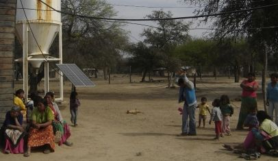
Hermanos viéndonos que hacíamos. Atrás, de blanco era una planta purificadora de agua. Ahora no funciona ya que lamentablemente se rompió.

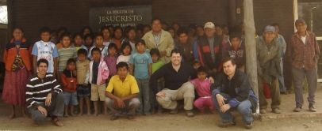
Todos los hermanos de Mistolar que quisieron sacarse una foto. Adelante con remera a rayas, el Hno. Texeira, el Hno. Cecchi de remera azul, y el Hno. del Sistema Educativo. En el medio con chaqueta color beige, el presidente de rama, Presidente Ortiz.

Niños de Mistolar. El con la remera es de Argentina.

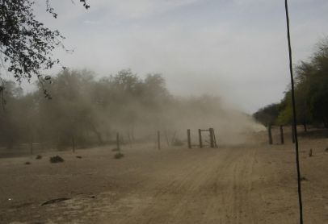
Camino de Mistolar a Filadelfia. Adelante va una de las camionetas donde se puede apreciar la cantidad de polvo que hay.

Camino de Mistolar a Filadelfia.

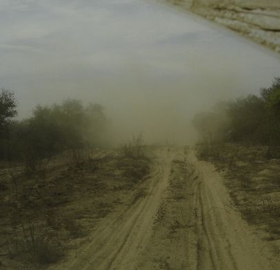
Camino de Mistolar a Filadelfia.

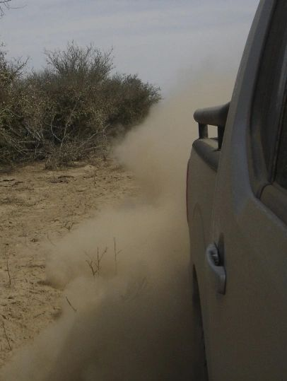
Aquí se ve el polvo que levanta la camioneta. El tractor que usan los hermanos para viajar les llena de polvo todo el camino.

Hno. Cecchi con uno de los pocos carteles que indican el camino.

Otro de los carteles que indican el camino. A la noche es muy difícil de verlos.

Árbol de Palo Borracho.

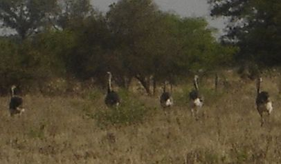
Ñandúes corriendo por el campo cuando nos acercamos a sacarles una foto.

Salon donde se reúne la nueva congregación de Nivaclés en Neuland. Neuland queda a unos 25 kilómetros de Filadelfia.

Cartel sobre la Ruta TransChacho que señala a La Abundancia.

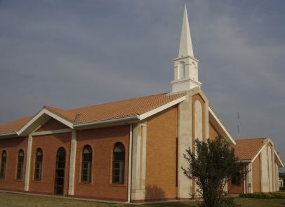
Capilla de Abundancia 1 y Abundancia 2.

Capilla de Abundancia 1 y Abundancia 2.

Pasillos de la capilla.

Planta desalinizadora de agua para que la comunidad tenga agua potable.

Escuela que hizo la iglesia en Abundancia sobre la vieja capilla.

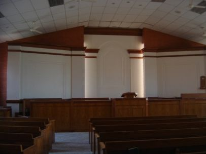
Salon Sacramental de la capilla de Abundancia.

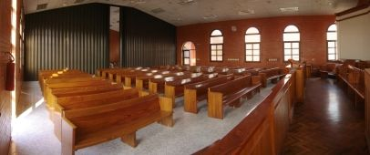
Vista panorámica del salon sacramental de Abundancia.